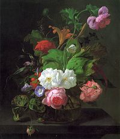

zichi Lorentz

Zichi Lorentz.
Visual Artist.Commentator-Publisher.
Liverpool UK (1952-1971).
London UK (1971-1994).
Japan (1994-).
Present location:Tatsuno City. Hyogo.
My Paintings
My painting galleries are divided according to theme, like abstract. flowers, landscapes, seascapes.
Painting Notes
Just some basic notes about my paintings and the different themes.

Flower Painting Notes
Some info on that
{kind=link}
{kind=link}
I enjoy painting flowers. Why? I think because of all the wonderful colors and shapes, that flowers come in. Painting flowers, is not as easy has what it first seems. No two flowers are identical. When you observe more closely, each flower is unique in their own way. The life cycle of the flower is short, so this uniqueness and short cycle is akin our own life. Flowers are one of the jewels of nature.
There endures a long history and tradition of flower painting, both in the East and West. Some of the most exceptional flower painting come from Dutch artists' of the 17th and 18th century, such as Rachel Ruysch, 1664-1750, who was a woman artist of extraordinary genius, also managing to give birth to ten children. The painting on the left is by her.
When painting flowers, the decision is whether to paint a more botanical or a more abstract works. Until the invention of the camera, botanical painting was the norm. There have been many fantastic botanical painters who would spend years painting a single flower. Even in modern times, such work is still carried out. A very good book on this subject is Contemporary Botanical Artists by Dr. Shirley Sherwood, who is also wealthy enough to have a very fine collection of works.
"Contemporary Botanical Artists, The Shirley Sherwood Collection" by Shirley Sherwood, Published by Weidenfeld and Nicholson, 1996. Amazon Listen to a broadcast by the BBC Womans Hour. I also like more abstract flower painting such as the works by Georgia O'Keefe. Both an outstanding artist and woman who lived for 99 years and was still creating art until the moment of her last breath. The following painting is a Portrait of an Iris, which is inspired by the work of Georgia O'Keefe.
{kind=link}
I like painting many kinds of flowers, roses, camellia, lotus. I enjoy the Japanese camellia because there are many varieties. I am not a botanical artist, I do not have the time or patience, but the two paintings at the beginning of the post are ones that I tried to do with as much accuracy as I could muster. Even though they are small works, they still took several days to complete. For a good reference page on Japanese Camellia visit http://www.ykanda.jp/camellia.html
In Japan, flower painting developed in a different way from the West, probably because was closed to outsiders for hundreds of year. There is less importance on creating the absolute botanical works. The way is to capture something of the spirit or nature of the flower. In Japanese culture all flowers have meanings, the most known being the Chrysanthemum Throne. One of my favorite Japanese flower painters is Chinami Nakajima.
Born the third son of nihonga painter Kiyoshi Nakajima in 1945 in Obuse, where his family had evacuated during the war, Nakajima graduated from the nihonga department at Tokyo National University of Fine Arts and Music, completing his graduate studies at the same university in 1971.

In 1979 he received the Yamadane Art Gallery Exhibition Award for Excellence. One of the finest contemporary nihonga painters, Nakajima is known for his broad range, encompassing works portraying fresh, vibrant flowers such as cherry and peony, large-format portraits rich with social and religious meaning, as well as book covers and illustrations. Nakajima donated 700 works to the town of Obuse, which opened the Obuse Museum and Nakajima Chinami Gallery in 1992. In 2000 Nakajima began teaching in the Design Department of the school of Fine Arts at the Tokyo National University of Fine Arts and Music.
When I lived in the Japan Alps (1994-2002), I had the good fortune to be able to visit his Obuse Museum, and met the artist several times.
Obuse-cho is the smallest town in Nagano, but has tremendous historical sites and cultural. Obuse is the town where Katsushika Hokusai the greatest master of ukiyoe painter loved and lived in his late years to paint. Some of his masterpieces such as the giant ceiling painting "Happo Nirami No Houou-zu" in Gansho-in and his own manuscript painting are displayed in The Hokusai Museum.